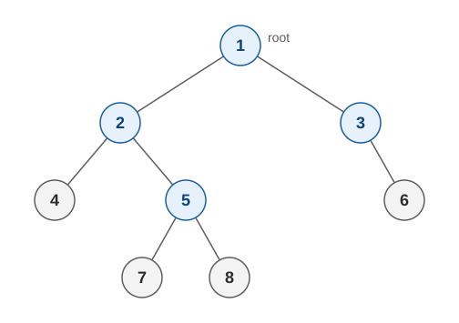

HW05: Trees on the Level
Basic Info
Problem Desc
本題會用一種特殊的方法來描述二元樹的結構，並要求你判斷描述是否完整，以及視情況回答其層序走訪。
This problem uses a special way to describe the structure of a binary tree. You need to determine whether the description is complete and, if it is, give the level-order traversal.
樹的每個節點會用 (n, s) 的 tuple 表示，其中 n 是節點的值，並且會是正整數；s 是從 root 到節點的路徑，其中「L」代表往左子樹走，「R」代表往右子樹走。根節點的 s 為空字串。節點給定時，不保證任何順序。
Each node of the tree is represented as a tuple (n, s), where n is the value of the node and is a positive integer, and s is the path from the root to the node, where "L" means going to the left subtree and "R" means going to the right subtree. The s of the root is an empty string. The nodes are given in no guaranteed order.
舉例來說，若給定 [(6, 'RR'), (4, 'LL'), (3, 'RL'), (5, 'LR'), (7, 'LRL'), (2, 'LR'), (1, ''), (8, 'LRR')]，則可以描述出如下的樹；而若有任何一個非葉節點沒被描述到，則代表描述不完整。
For example, given [(6, 'RR'), (4, 'LL'), (3, 'RL'), (5, 'LR'), (7, 'LRL'), (2, 'LR'), (1, ''), (8, 'LRR')], the following tree can be described. If any non-leaf node is not described, the description is incomplete.

請撰寫一個函式 trees_on_level，輸入是前面提及的描述，輸出是樹的層序走訪（描述完整時）或空的 list（描述不完整時）。
Please write a function trees_on_level. The input is the description above. The output is the level-order traversal of the tree (when the description is complete) or an empty list (when the description is incomplete).
Input Desc
如上所述的描述內容，以 list of tuples 的方式給定。其中，給定的節點至少會有一個。
The description as stated above, given as a list of tuples. At least one node is given.
Output Desc
描述完整時，將層序走訪的結果以 list of integers 的格式回傳；描述不完整時，回傳空的 list。
When the description is complete, return the level-order traversal as a list of integers. When the description is incomplete, return an empty list.
Sample Input
[(6, 'RR'), (4, 'LL'), (3, 'RL'), (5, 'LR'), (7, 'LRL'), (2, 'LR'), (1, ''), (8, 'LRR')]
Sample Output
[1, 2, 3, 4, 5, 6, 7, 8]
Hints and Notes